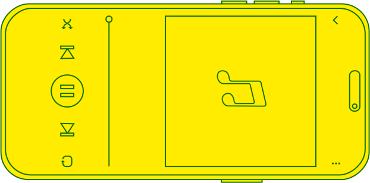
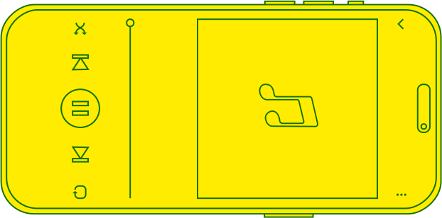

Hur har streamingtjänster påverkat våra lyssnarvanor?
Med lanseringen av de första streamingtjänstera börjar stadigt en minskning i medellängden hos låtar från ca. 240 000 ms (4:00, 2005) till 191 000 (3:10, 2022). Detta kan bero på hur streamingtjänster har byggt sin ekonomiska struktur, med att en “lyssning” endast räknas om den över 30 sekunder (Spotify, How we count streams). David Hesmondhalgh, Professor i Media, Music and Culture vid University of Leeds håller med:
"Shortening of tracks is widely attributed to [music streaming platforms], or to the musical system in which they now play a central part, including the now widely known fact that a stream counts as a stream only if it is played for 30 seconds or more, and does not count at all if it is played for less than 30 seconds. A later Quartz headline, for example, proclaims that ‘the economics of streaming is making songs shorter’ (Kopf, 2019)."
Hur påverkades ljudnivåerna av streamingtjänsterna?
Sedan 2010 började den genomsnittliga ljudnivån gå ner för första gången sedan introduktionen av digital ljudkompression. Detta överstämmer med lanseringen av de första streamingtjänsterna, som eventuellt började normalisera ljudnivåerna på alla låtar (Spotify, Loudness Normalization). Varför denna normalisering görs i streamingtjänsterna kan bero på en generell negativ reaktion till det pågående s.k “Loudness War” som enligt vissa förvärrat ljudkvaliteten på musik överlag. Bland kritikerna av The Loudness War är Peter Mew, senior mastering engineer på Abbey Road studios:
"The brain is not geared to accept buzzing. The CDs induce a sense of fatigue in the listeners. It becomes psychologically tiring and almost impossible to listen to."